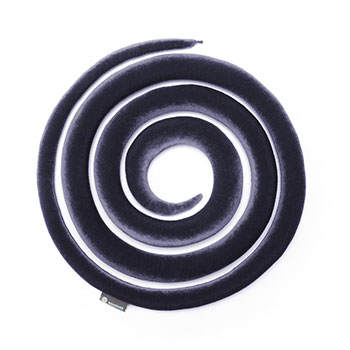
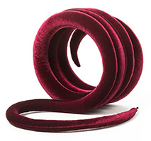
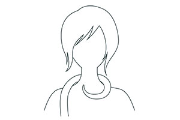
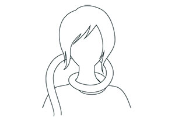
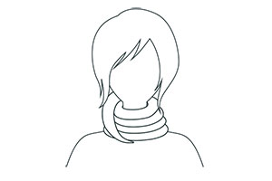
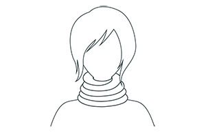

{kind=link}
{kind=link}
{kind=link}
{kind=link}
{kind=link}
{kind=link}

Cox Grátt
Snákurinn
Fjölnota hálskragi, láttu hugmyndaflugið ráða för!
Upplýsingar
Snákurinn er hinn fullkomni ferðafélagi, sem hálskragi styður hann við höfuðið svo þú náir að hvílast í fluginu.
Smelltu á snákinn til að fletta í gegnum alla
4 mögulegu litina!
Um Snákinn
Snákurinn er mjúkur hálskragi sem einfalt er að hringa utan um hálsin eins og trefil til að ná fram tilætluðum stuðningi við höfuð og háls.
Hann er frábær á ferðalagi fyrir þá sem vilja hvílast þegar setið er í flugvél, bíl eða lest.
Hugarfarið á bak við hönnunina var að skapa heilsuvöru sem vekur jákvæða athygli fyrir notendur og reynist frábær lausn fyrir fólk sem á við krónísk vandamál í hálsi að stríða.
Snákurinn býður líka upp á allskonar möguleika til notkunar sem skart, þá er bara að þora að láta hugmyndaflugið ráða ferðinni.
Snákurinn kemur pakkaður í fallegri öskju.
Notkunarmöguleikar
Snákurinn frá Bara býður upp á áður óþekkta notkunarmöguleika þegar kemur að heilsuvöru og hjálpartæki.
Sem aukahlutur eða skart
Hin óhefðbundna hönnun á hálskraganum skapar möguleikan á að binda eða vefja hann á sig og nota hann sem skart/aukahlut eða einhversskonar trefil. Þannig getur Snákurinn verið eitthvað nýtt og spennandi í hvert skipti sem þú setur hann á þig.
Á ferðalagi
Snákurinn er frábær ferðafélagi! Hvort sem það eru lengri eða styttri ferðalög hjálpar hann þér að slaka á og hvílast þegar þú situr í flugvél, bíl eða lest.
Fyrirbyggjandi
Snákurinn er góð áminning þess að halda hálsinum uppréttum og koma í veg fyrir að þú missir höfuðið fram og haldir slæmri álagsstöðu til lengri tíma á háls og herðar.
Minniháttar meiðsl í hálsi
Hálskraginn hjálpar þeim sem eiga við minniháttar eða króníska áverka í hálsi að
stríða að halda höfðinu stöðugu. Einfalt er að stilla Snákinn
að hverjum og einum og stýra stífleika og stuðning sem hann á að veita hverju
sinni.
Margir notendur upplifa öryggis- og vellíðunartilfinningu með stuðning
Snáksins frá Bara.
Ítarlegri Upplýsingar
Þvottaleiðbeiningar
Snákinn má aðeins handþvo á hámark 40°C
eða setja í þvottavélapoka á mildu prógrammi í þvottavél. Nauðsynlegt er
að meðhöndla Snákinn af gætni og teygja ekki á
honum.
Ekki má setja Snákinn í þurrkara.


Þú hefur val um 4 liti
Smelltu á lit til að sjá stærri mynd af
snáknum
{kind=link}
{kind=link}
{kind=link}
{kind=link}
Leiðbeiningar hvernig nota má snákinn sem hálskraga
Það er mikilvægt að aðeins þeir noti Snákinn sem
geta sett hann á og tekið hann af sér sjálfir.

Skref 1
Byrjaðu með því að leggja styttri og breiðari endan á Snáknum á aðra öxlina.

Skref 2
Vefðu Snáknum um hálsinn og upp í átt að hökunni þannig að hann sitji þægilega.

Skref 3
Taktu í granna endan á Snáknum og lokaðu hringnum með því að stínga honum inn á milli Snáksins við hökuna.

Skref 4
Slakaðu á og njóttu stuðningsins sem Snákurinn frá Bara veitir þér.
Til Fróðleiks:
Asklepíos guð lækninga úr grískri goðafræði gekk alltaf um með snák sem var hringaður utan um stafinn hans. Snákinn nýtti hann til lækninga og er stafurinn með snákinn tákn læknisfræðinnar í dag.Kynntu þér það sem viðskiptavinir og sérfræðingar hafa að segja um Snákinn
Smelltu á textan fyrir neðan til að fletta í
gegnum reynslusögurnar.